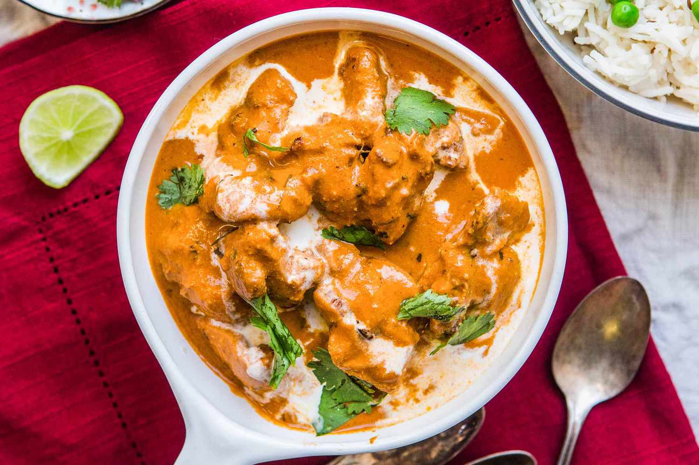

Mint Chicken

Description
Butter chicken is a popular Indian dish made with marinated and grilled chicken in a creamy tomato-based sauce, typically served with rice or naan bread.
Ingrediants
- 1 lb boneless, skinless chicken breasts, cut into bite-sized pieces
- 1/2 cup plain yogurt
- 1 tbsp ginger paste
- 1 tbsp garlic paste
- 2 tbsp butter
- 1 can (14.5 oz) tomato sauce
- 1/2 cup heavy cream
- 1 tsp cumin
- Salt and pepper to taste
Steps
- In a bowl, mix together the chicken, yogurt, ginger paste, garlic paste, cumin, salt, and pepper until well coated.
- Melt the butter in a pan over medium heat.
- Add the chicken to the pan and cook for about 10 minutes or until the chicken is cooked through.
- Add the tomato sauce to the pan and stir to combine with the chicken.
- Pour in the heavy cream and stir well.
- Cook for an additional 5 minutes, stirring occasionally, until the sauce has thickened.
- Taste the sauce and adjust the seasoning with salt and pepper, as needed.